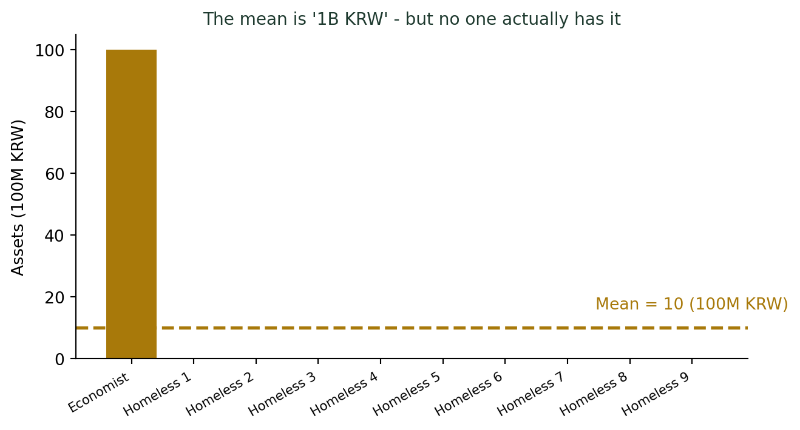
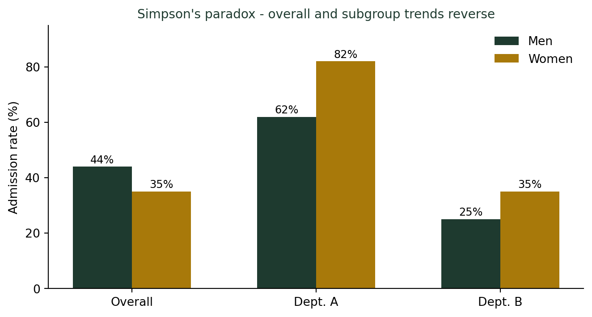

평균의 함정
통계기초
기술통계
평균은 가장 친숙한 통계지만, 가장 오해받는 숫자이기도 합니다. 평균이 숨기는 것들을 들여다봅니다.
평균은 거짓말을 하지 않는다, 그러나…
기초통계 첫 수업, 나는 늘 이 예시로 시작한다. 경제학자 한 명과 노숙자 아홉 명이 한 방에 있다. 이 방의 평균 자산은 얼마일까?
경제학자의 자산이 100억 원이고 나머지 아홉 명의 자산이 0원이라면, 평균은 10억 원이다. 방 안의 열 명 중 누구도 평균 근처에 없다. 평균은 거짓말을 하지 않았지만, 현실을 제대로 전달하지도 못했다.
이것이 평균의 함정이다.
평균이 대표값이 되려면
평균이 집단을 잘 대표하려면 데이터가 대칭적으로 분포되어 있어야 한다. 정규분포처럼 좌우가 균형 잡힌 경우라면 평균은 훌륭한 대표값이다. 그러나 현실 데이터는 종종 한쪽으로 치우쳐 있다(왜도, skewness).
분포 형태별 평균의 신뢰도
| 데이터 특성 | 평균의 신뢰도 | 권장 대안 |
|---|---|---|
| 대칭 분포 | 높음 | 평균 그대로 사용 |
| 오른쪽 꼬리 (고소득, 집값 등) | 낮음 | 중앙값(median) |
| 이상치 존재 | 낮음 | 중앙값 또는 절사평균 |
| 다봉 분포 (두 집단 혼재) | 매우 낮음 | 집단별로 분리해서 분석 |
소득 통계에서 “평균 소득”보다 “중앙값 소득”이 더 현실을 잘 반영하는 이유가 여기에 있다.
더 깊이: 평균 말고도 다양한 대표값이 있다
산술평균이 이상값에 흔들릴 때 쓸 수 있는 대안은 중앙값 말고도 여러 가지다. 강의노트 〈기초통계 2. 데이터와 통계 — 측정형 데이터〉에서는 절사평균, 윈저화평균, 기하평균, 조화평균 등 상황별 대표값과 분산·표준편차 같은 산포도까지 함께 정리한다.
평균의 역설: 모두가 평균 이하일 수 있다
미국 아이오와주 아이들의 지능 검사 점수를 분석한 결과, “아이오와주 아이들의 70% 이상이 평균 이상”이라는 결론이 나온 적이 있다. 얼핏 모순처럼 보이지만, 분포가 왜곡되어 있으면 충분히 가능한 일이다.
“평균 이하 = 하위 50%”가 아니다
분포가 오른쪽으로 치우친 경우, 전체의 절반 이상이 평균 아래에 있을 수 있다.
내 소득이 “평균 이하”라고 해서 내가 하위 50%라는 뜻이 아니다. 평균과 중앙값이 얼마나 차이 나는지를 함께 확인해야 한다.
집단을 합치면 평균이 역전된다: 심슨의 역설
1973년 UC 버클리 대학원 입학 데이터를 분석했더니, 전체 합격률은 남성이 여성보다 높았다. 성차별이 있는 것처럼 보였다.
그런데 학과별로 나눠서 보니, 오히려 대부분의 학과에서 여성 합격률이 더 높거나 비슷했다. 여성들이 경쟁률이 높은 학과에 집중 지원했고, 남성들은 상대적으로 합격률이 높은 학과에 많이 지원했기 때문이다. 전체를 합산한 평균이 각 부분의 경향과 반대 방향을 가리킨 것이다.
심슨의 역설(Simpson’s Paradox)
집단을 합칠 때 평균이 어떻게 변하는지 주의하지 않으면, 데이터는 정반대의 이야기를 들려줄 수 있다.
UC 버클리 대학원 입학 (1973) — 학과별로 쪼개면 방향이 뒤집힌다
| 구분 | 지원자 | 합격자 | 합격률 |
|---|---|---|---|
| 전체 합산 | |||
| 남성 | 8,442 | 3,738 | 44% |
| 여성 | 4,321 | 1,494 | 35% |
| A학과 (경쟁률 낮음) | |||
| 남성 | 825 | 512 | 62% |
| 여성 | 108 | 89 | 82% ↑ |
| B학과 (경쟁률 높음) | |||
| 남성 | 560 | 138 | 25% |
| 여성 | 375 | 131 | 35% ↑ |
전체를 합치면 남성 합격률이 높아 보이지만, 학과별로 나누면 여성 합격률이 더 높다. 여성이 경쟁률이 높은 학과에 집중 지원했기 때문에 생기는 착시다.
집단 간 구성 비율이 다를 때, 전체 평균은 각 집단의 경향을 왜곡한다. 데이터를 합산하기 전에 집단 구조를 먼저 파악해야 한다.
이 예시를 강의할 때마다 학생들에게 꼭 덧붙이는 말이 있다. “이건 미국 이야기만이 아닙니다.” 국내 통계 교육 자료에서도 같은 구조의 사례가 자주 소개된다. 합격이 비교적 쉬운 공학계열에는 남학생이, 합격이 어려운 계열(예: 식품영양학과처럼 경쟁률이 높은 학과)에는 여학생 지원이 몰리면, 계열별 합격률은 여학생이 더 높은데도 전체 합격률은 남학생이 높게 나오는 똑같은 역설이 벌어진다. 나라와 시대는 달라도, 통계적 구조는 그대로 반복된다.

평균보다 분포를 보라
결론적으로, 평균은 단 하나의 숫자로 복잡한 현실을 요약하려 한다는 점에서 태생적인 한계를 가진다.
평균을 볼 때 함께 확인해야 할 것들
- 분포가 대칭인가, 치우쳐 있는가? → 히스토그램으로 확인
- 이상치가 있는가? → 평균과 중앙값의 차이로 판단
- 하나의 집단인가, 두 집단이 섞여 있는가? → 집단별로 나눠서 분석
- 표준편차(분산)는 얼마인가? → 평균만큼 중요한 정보
평균은 유용한 도구다. 그러나 도구는 쓰임새를 알고 써야 한다.
나는 시험을 채점하고 반 평균을 낼 때마다 스스로 되묻는다. “이 한 줄짜리 숫자가, 서른 명의 서로 다른 이야기를 얼마나 뭉개고 있을까.” 평균을 믿지 말라는 말이 아니라, 평균 뒤에 숨은 사람들을 잊지 말자는 뜻이다.